Clase3 Graficos Base
Miguel Tripp
2021-04-25
Last updated: 2021-06-05
Checks: 7 0
Knit directory: 2021/
This reproducible R Markdown analysis was created with workflowr (version 1.6.2). The Checks tab describes the reproducibility checks that were applied when the results were created. The Past versions tab lists the development history.
Great! Since the R Markdown file has been committed to the Git repository, you know the exact version of the code that produced these results.
Great job! The global environment was empty. Objects defined in the global environment can affect the analysis in your R Markdown file in unknown ways. For reproduciblity it’s best to always run the code in an empty environment.
The command set.seed(20210412) was run prior to running the code in the R Markdown file. Setting a seed ensures that any results that rely on randomness, e.g. subsampling or permutations, are reproducible.
Great job! Recording the operating system, R version, and package versions is critical for reproducibility.
Nice! There were no cached chunks for this analysis, so you can be confident that you successfully produced the results during this run.
Great job! Using relative paths to the files within your workflowr project makes it easier to run your code on other machines.
Great! You are using Git for version control. Tracking code development and connecting the code version to the results is critical for reproducibility.
The results in this page were generated with repository version 624db7c. See the Past versions tab to see a history of the changes made to the R Markdown and HTML files.
Note that you need to be careful to ensure that all relevant files for the analysis have been committed to Git prior to generating the results (you can use wflow_publish or wflow_git_commit). workflowr only checks the R Markdown file, but you know if there are other scripts or data files that it depends on. Below is the status of the Git repository when the results were generated:
Ignored files:
Ignored: .Rhistory
Ignored: .Rproj.user/
Untracked files:
Untracked: Curso_Bioestadistica_MTripp_cuatriII.docx
Untracked: Curso_Bioestadistica_MTripp_cuatriII.pdf
Untracked: Diapositivas/
Untracked: README.html
Untracked: Resources/
Untracked: analysis/images/
Untracked: data/CS_subset.csv
Untracked: data/Consumo_oxigeno_wide.csv
Untracked: data/Data_enzimas_Experimento1.txt
Untracked: data/Data_enzimas_Experimento2.txt
Untracked: data/Data_enzimas_Experimento3.txt
Untracked: data/Data_enzimas_Experimento4.txt
Untracked: data/DownloadFestival(No Outlier).dat
Untracked: data/Festival.csv
Untracked: data/LungCapData.txt
Untracked: data/LungCapDataEsp.csv
Untracked: data/RExam.dat
Untracked: data/Rexamendat.csv
Untracked: data/Tabla1_Muestreo.txt
Untracked: data/Transcriptome_Anotacion.csv
Untracked: data/Transcriptome_DGE.csv
Untracked: data/datasets_Pokemon.csv
Untracked: data/datasets_Pokemon.xls
Untracked: data/exp_macrogard_growth.tab
Untracked: data/exp_macrogard_rna-dna.tab
Untracked: data/macrogard_crecimiento.csv
Untracked: data/penguins_size.csv
Untracked: data/pokemon_extended.csv
Untracked: output/Plot_all_penguins.pdf
Untracked: output/Plot_all_penguins.tiff
Untracked: output/graficos/
Note that any generated files, e.g. HTML, png, CSS, etc., are not included in this status report because it is ok for generated content to have uncommitted changes.
These are the previous versions of the repository in which changes were made to the R Markdown (analysis/Clase3_GraficosBase.Rmd) and HTML (docs/Clase3_GraficosBase.html) files. If you’ve configured a remote Git repository (see ?wflow_git_remote), click on the hyperlinks in the table below to view the files as they were in that past version.
| File | Version | Author | Date | Message |
|---|---|---|---|---|
| html | fbd7857 | Miguel Tripp | 2021-06-05 | Build site. |
| html | 87a646f | Miguel Tripp | 2021-06-02 | Build site. |
| html | 47a7147 | Miguel Tripp | 2021-05-31 | Build site. |
| html | 95c661f | Miguel Tripp | 2021-05-31 | Build site. |
| html | 34660de | Miguel Tripp | 2021-05-24 | Build site. |
| html | da04854 | Miguel Tripp | 2021-05-24 | Build site. |
| html | 3321935 | Miguel Tripp | 2021-05-24 | Build site. |
| html | 3d12902 | Miguel Tripp | 2021-05-16 | Build site. |
| html | 20b3aab | Miguel Tripp | 2021-05-16 | Build site. |
| html | f20dcb1 | Miguel Tripp | 2021-05-16 | Build site. |
| html | b1ca7f3 | Miguel Tripp | 2021-05-16 | Build site. |
| html | b3002cc | Miguel Tripp | 2021-05-04 | Build site. |
| html | 2c60db3 | Miguel Tripp | 2021-05-04 | Build site. |
| html | 65fa0ee | Miguel Tripp | 2021-05-04 | Build site. |
| html | b3c3d89 | Miguel Tripp | 2021-04-26 | Build site. |
| html | 195c2e9 | Miguel Tripp | 2021-04-25 | Build site. |
| html | e322dac | Miguel Tripp | 2021-04-25 | Build site. |
| Rmd | 7d0111c | Miguel Tripp | 2021-04-25 | Publish the initial files for myproject |
Uno de los aspectos mas poderosos de R es su capacidad de producir una gran variedad de gráficos los cuales pueden ser reproducibles, modificables y publicables con solo unos poco comandos.
R puede producir gráficos utilizando tres paquetes principales: ggplot, lattice y gráficos base. En esta sección nos enfocaremos a los gráficos base.
Para estos ejercicios, utilizaremos la base de datos de pingünos del Archipielago de Palmer la cual se encuentra disponible en la carpeta data
penguins <- read.table("data/penguins_size.csv", sep = ",", na.strings = "NA", header = TRUE, as.is = FALSE)
penguins <- penguins[complete.cases(penguins), ]El archivo penguins_size.csv contiene las variables:
species: Especies de pingüino (Chnstrap, Adelie o Gentoo)culmen_length_mm: longitud del culmen (mm)culmen_depth_mm: profundidad del culmenflipper_length_mm: longitud de la aleta (mm)body_mass_g: masa corporal (g)island: nombre de la isla (Dream, Torgersen o Biscoe)sex: sexo
Los pingüinos:

@AllisonHorst

@AllisonHorst
1: Histograma hist()
Para crear un histograma usamos la función hist(), que siempre nos pide como argumento x un vector numérico. El resto de los argumentos de esta función son opcionales. Si damos un vector no numérico, se nos devolverá un error.
Para obtener un hitograma de frecuencias del peso corporal body_mass_g de todos los pingüinos, se ejecuta el siguiente comando:
hist(x = penguins$body_mass_g)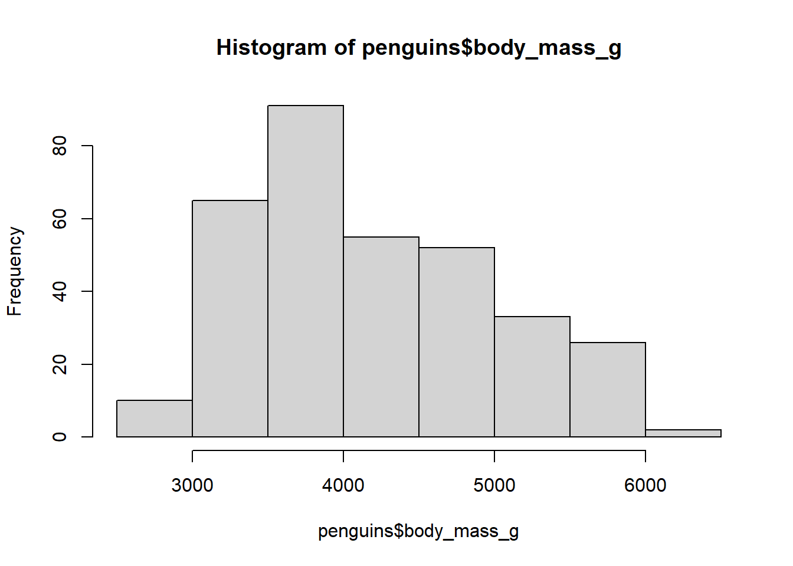
Para la longitud del culmen culmen_lengh_mm:
hist(x = penguins$culmen_length_mm)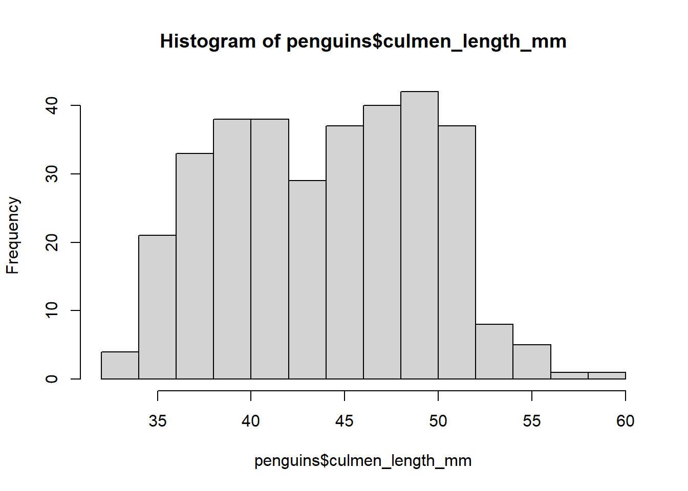
Vamos a cambiar el título del gráfico con el argumento main, y el nombre de los ejes x y Y con xlab y ylab, respectivamente.
hist(x = penguins$culmen_length_mm,
#colora el titulo principal
main = "histograma de longitud del culmen (mm)",
#etiqueta del eje x
xlab = "longitud (mm)",
#etiqueta del eje y
ylab = "Frecuencia")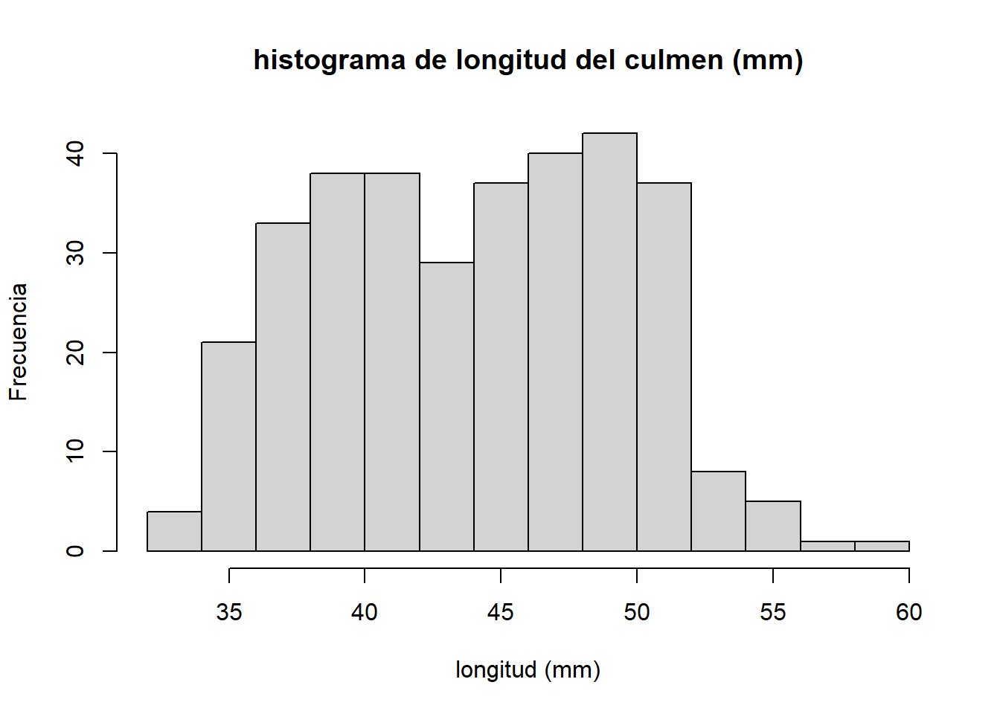
La funcion hist auntomaticamente selecciona el número de intervales (“breaks”) mas adecuado. Pero es posible definirlos manualmente con el parametro “breaks”
hist(x = penguins$culmen_length_mm,
breaks = 20)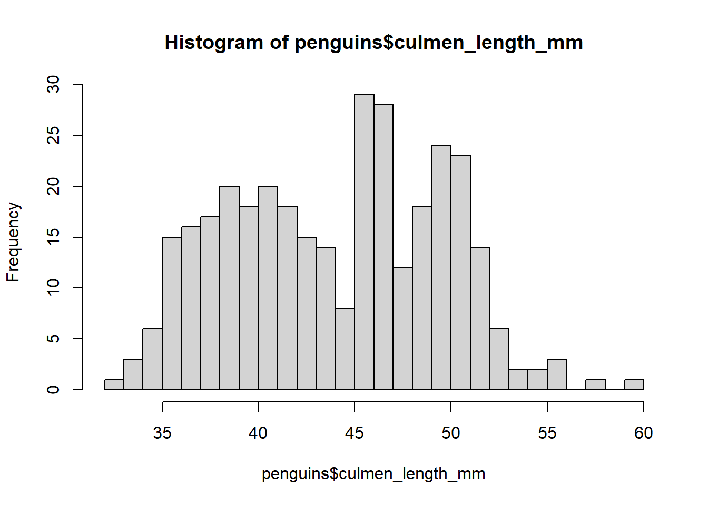
hist(x = penguins$culmen_length_mm,
breaks = 30)Probemos cambiando el color de las barras del histograma agregando el argumento col. Este argumento acepta nombres de colores genéricos en inglés como “red”, “blue” o “purple”; y también acepta colores hexadecimales, como “#00FFFF”, “#08001a” o “#1c48b5”.
hist(x = penguins$culmen_length_mm,
main = "histograma de longitud total (mm)",
xlab = "longitud (mm)",
ylab = "Frecuencia",
col = "lightblue")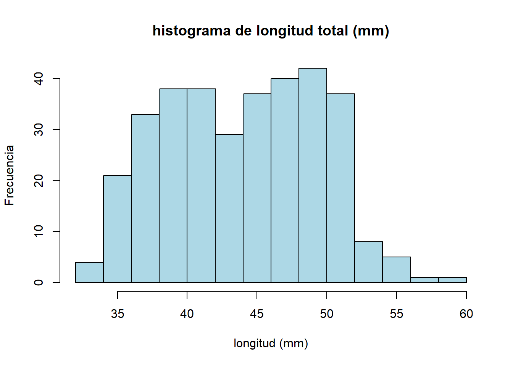
Y finalmente podemos añadir dos histogramas en una sola grafica. Para esto, baso a aplicar lo que hemos visto hasta ahora para generar un subset con los datos de longitud del culmen culmen_length_mm de los machos y otro de las hembras
Posteriormente, se llama la función hist() para cada subset, pero al segundo se le debe añadir el parametro: add = TRUE
#generar el subset de dato de los machos
male_peng <- penguins[penguins$sex == "MALE", "culmen_length_mm"]
#subset de datos de hembrsa
female_peng <- penguins[penguins$sex == "FEMALE","culmen_length_mm" ]
#generar el primer histograma
hist(male_peng, breaks = 25, col = "lightblue",
main = "histograma de frecuencias por sexo",
ylab = "Frecuencia",
xlab = "Longitud (mm)")
hist(female_peng, breaks = 25, col = "salmon", add = TRUE)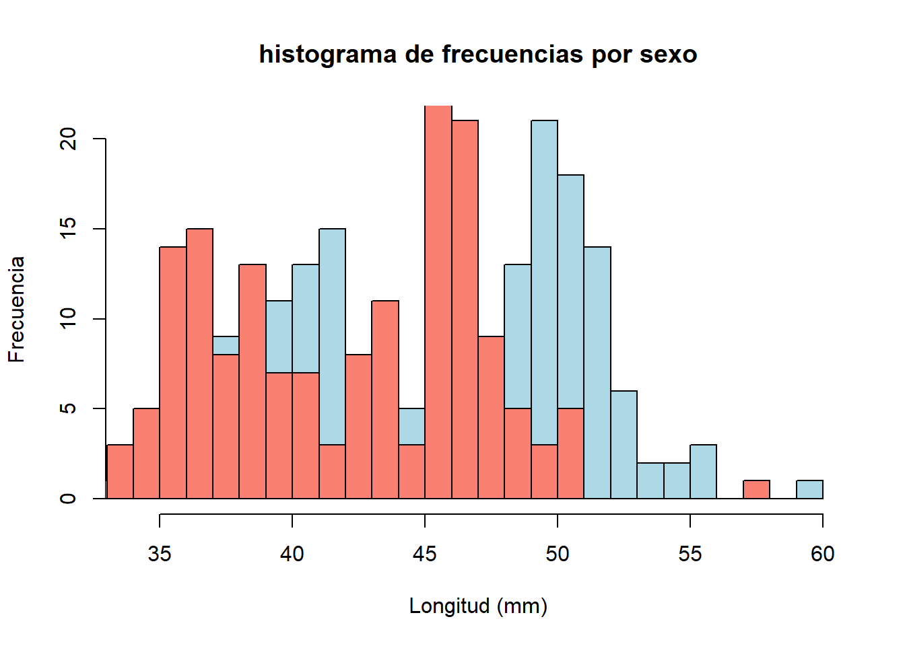
2:Función plot()
Esta función tiene un comportamiento especial, pues dependiendo del tipo de dato que le demos como argumento, generará diferentes tipos de gráfica. Además, para cada tipo de gráfico, podremos ajustar diferentes parámetros que controlan su aspecto, dentro de esta misma función.
Dependiendo del tipo de dato que demos a x y y será el gráfico que obtendremos, de acuerdo a las siguientes reglas:
| x | y | Gráfico |
|---|---|---|
| Continuo | Continuo | Diagrama de dispersión (Scatterplot) |
| Continuo | Discreto | Diagrama de dispersión, y coercionada a numérica |
| Continuo | Ninguno | Diagrama de dispersión, por número de renglón |
| Discreto | Continuo | Diagrama de caja (Box plot) |
| Discreto | Discreto | Gráfico de mosaico (Diagrama de Kinneman) |
| Discreto | Ninguno | Gráfica de barras |
| Ninguno | Cualquiera | Error |
por ejemplo, si graficamos solamente la longitud del culmen (continuo + Ninguno):
plot(penguins$culmen_length_mm)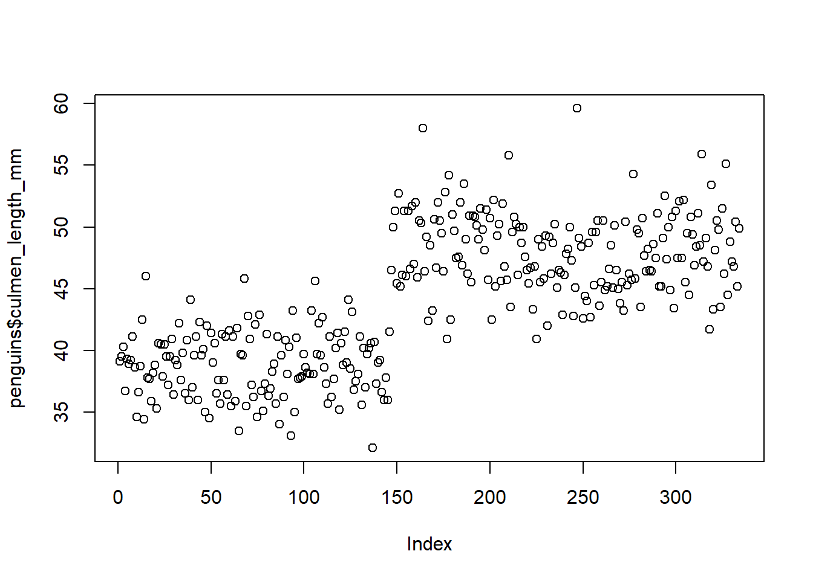
pero si graficamos longitud del culmen por la masa corporal (continuo + continuo)
plot(x = penguins$culmen_length_mm, y = penguins$body_mass_g)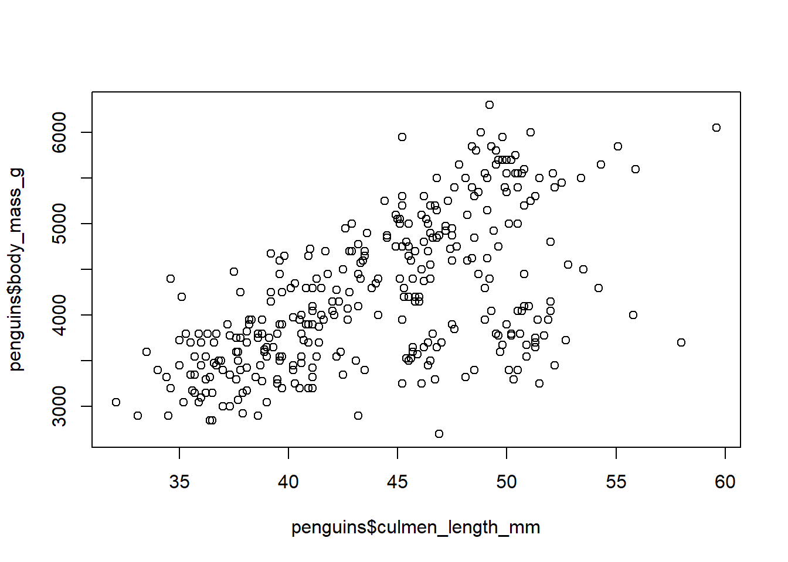
ahora si graficamos Longitud total x Sitio (continuo x discreto)
plot(penguins$culmen_length_mm, penguins$species)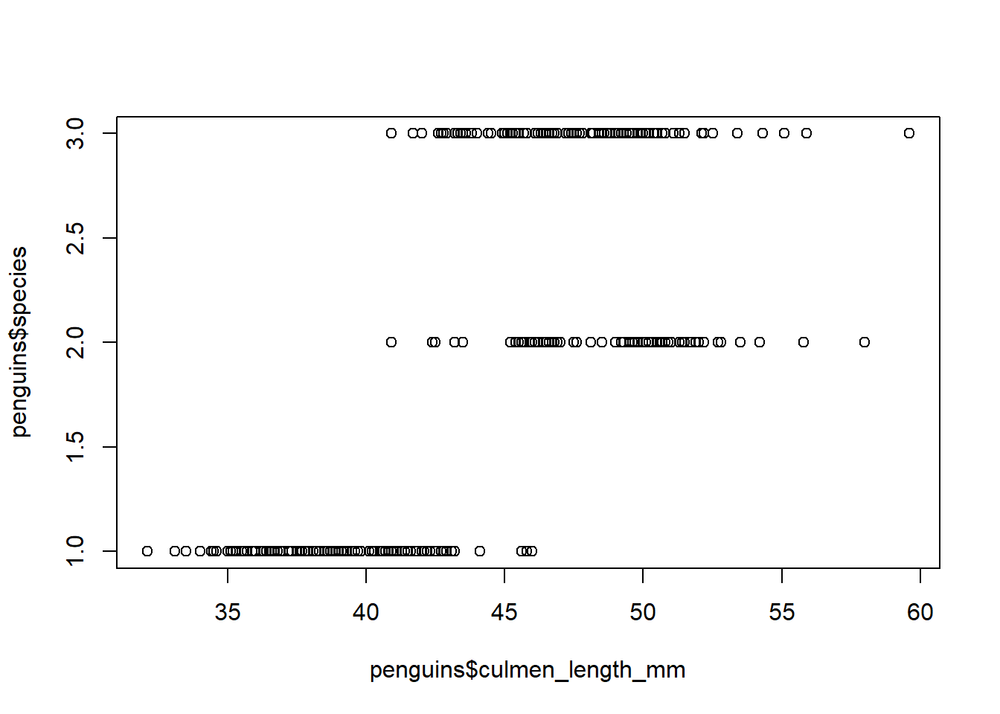
si graficamos la especies (discreto x niunguno)
plot(penguins$species)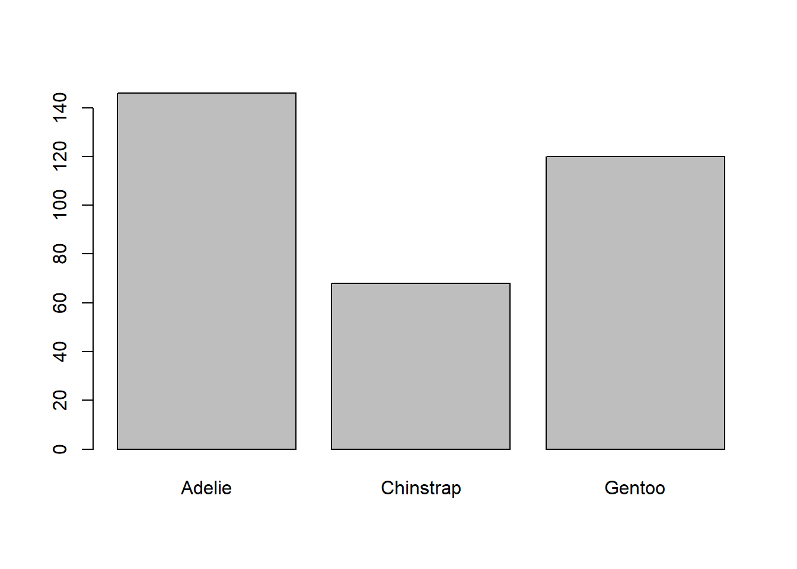
Ahora si graficamos isla x sexo (discreto x discreto)
plot(penguins$island, penguins$sex)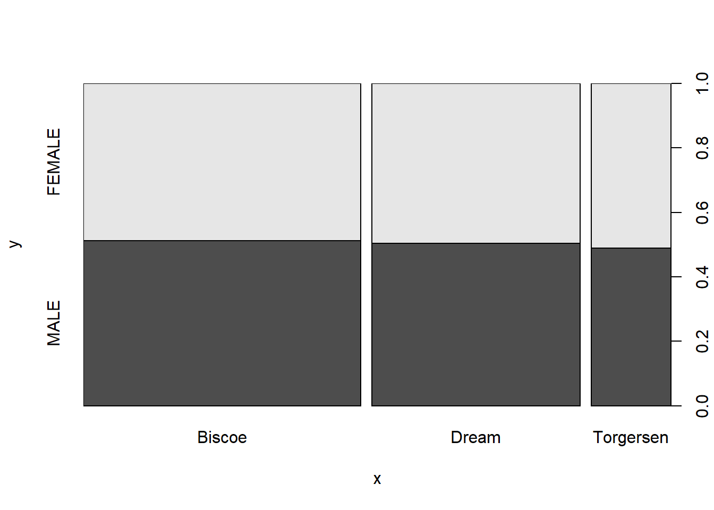
ahora si graficamos isla y longitud total (discreto x continuo)
plot(penguins$island, penguins$culmen_length_mm)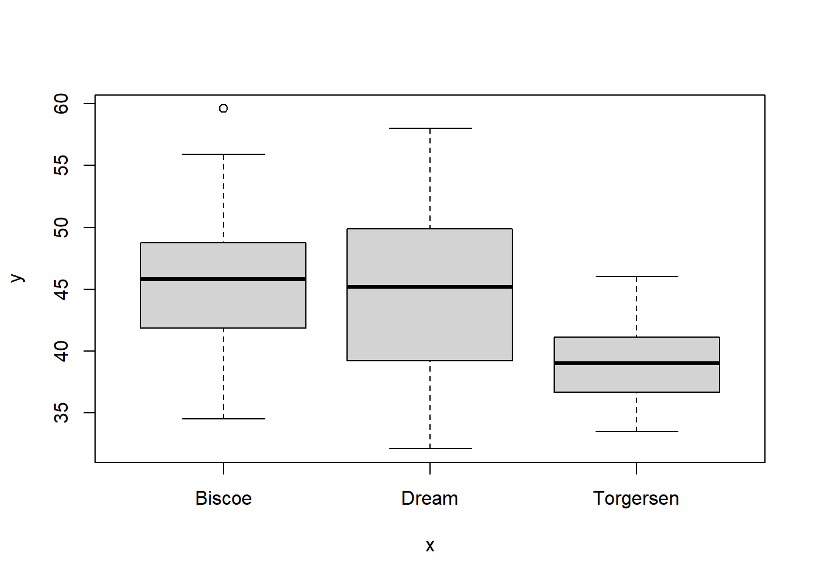
La función plot es particularmente util para graficar series de tiempo. Para visualizar esto, vamos a generar un vector con una serie de 31 años, desde 1990 hasta el 2020 usando la función seq() y rnorm()
year <- seq(1990,2020,1)
value <- rnorm(31)
plot(year, value)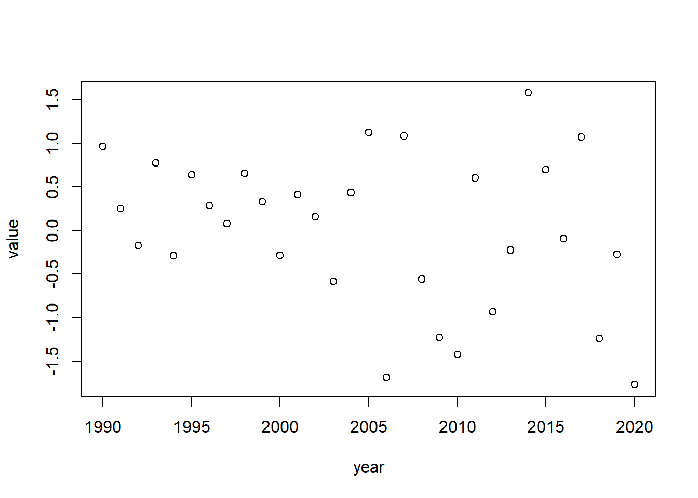
Para controlar el tipo de grafico dentre de esta función, usamos el parametro `type" donde puede ser:
- “l” = linea
- “o” = puntos
- “b” = ambos
plot(year, value, type = "l")plot(year, value, type ="b")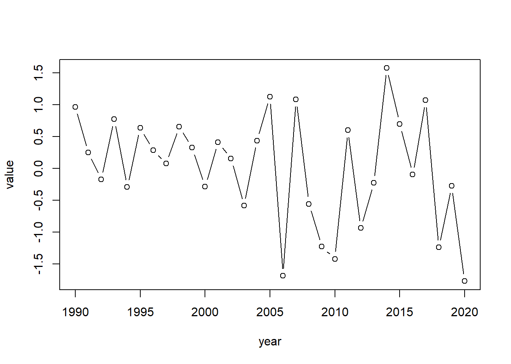
Al igual que con hist() es posible cambiar el color de una grafica, asi como los nombres usando los parametros main, col y xlab, ylab
plot(year, value, type="l", col ="red", main = "gráfico anual", xlab = "Año", ylab = "anomalia")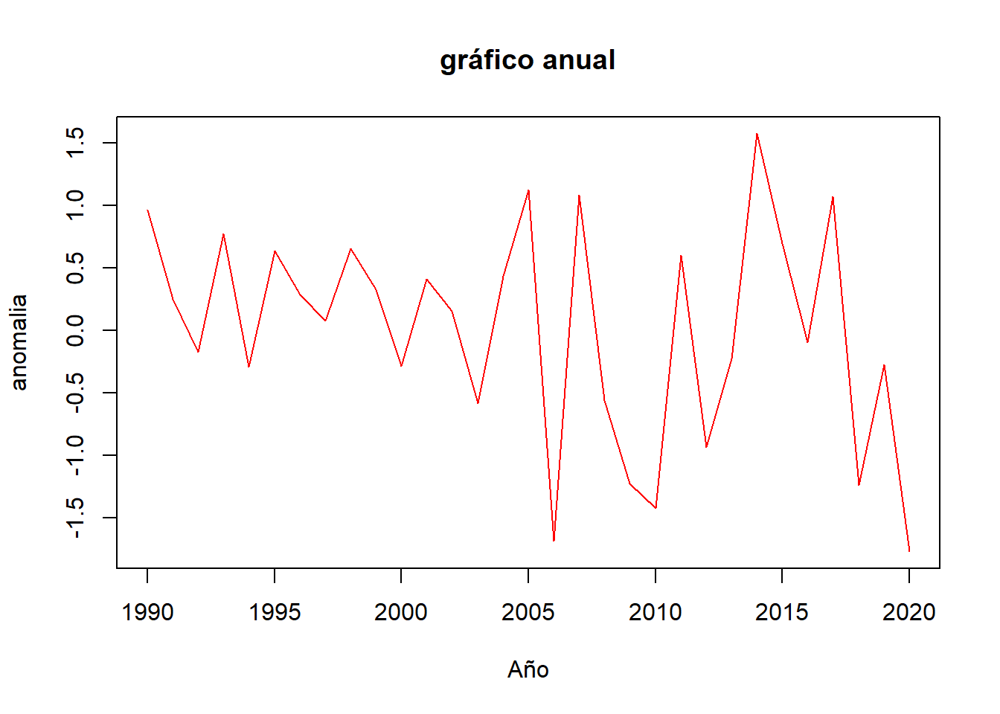
3:Boxplots boxplot()
Los diagrams de caja, o boxplots, son gráficos que muestra la distribución de una variable usando cuartiles, de modo que de manera visual podemos inferir algunas cosas sobre su dispersión, ubicación y simetría.
Una gráfica de este tipo dibuja un rectángulo cruzado por una línea recta horizontal. Esta linea recta representa la mediana, el segundo cuartil, su base representa el pimer cuartil y su parte superior el tercer cuartil. Al rango entre el primer y tercer cuartil se le conoce como intercuartílico.
EN la sección anterior vimos como generar un boxplot usando la funcion plot(). Una alternativa es utilizar la función boxplot().
En la segunda manera necesitamos dar dos argumentos:
- formula: Para esta función las fórmulas tienen el formato y ~ x, donde x es el nombre de la variable continua a graficar, y la x es la variable que usaremos como agrupación.
- data: Es el data frame del que serántomadas las variable
Por ejemplo, para generar diagramas de la longitud total por sitio de colecta, se ejecuta el comando:
boxplot(culmen_length_mm ~ island, data = penguins)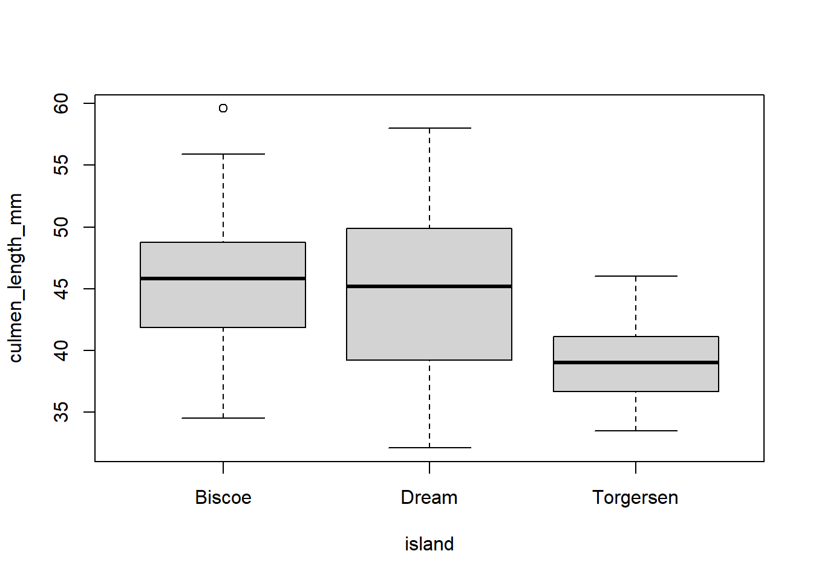
Esta opción nos permite generar graficos con interacción. Por ejemplo, si quieremos graficar la longitud total en función del sitio de colecta y del sexo, ejecutamos:
boxplot(culmen_length_mm ~ sex * island, data = penguins)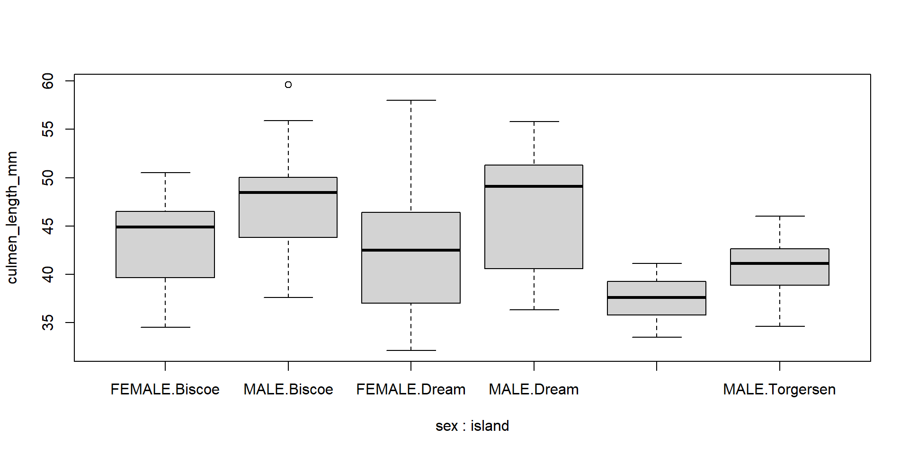
Para facilitar la lectura de la gráfica, se le puede asignar un color difente a cada grupo
boxplot(culmen_length_mm ~ sex * island, data = penguins, col = c("tomato", "lightblue"))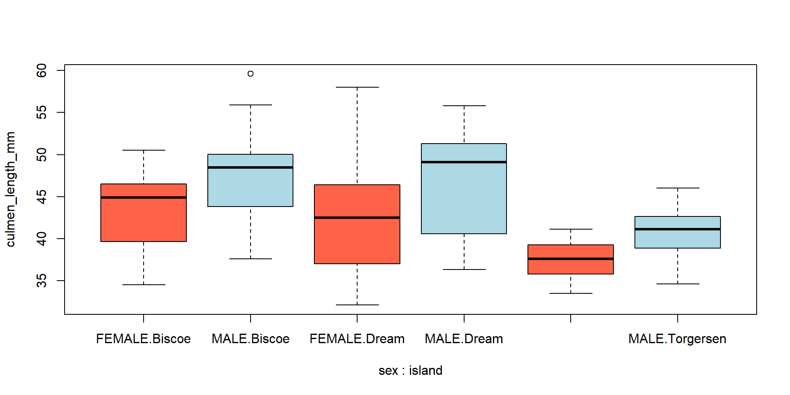
4:Edición
Asignar un color de acuerdo a una variable con el parametro col
plot(x = penguins$culmen_length_mm,
y = penguins$body_mass_g,
col = penguins$sex)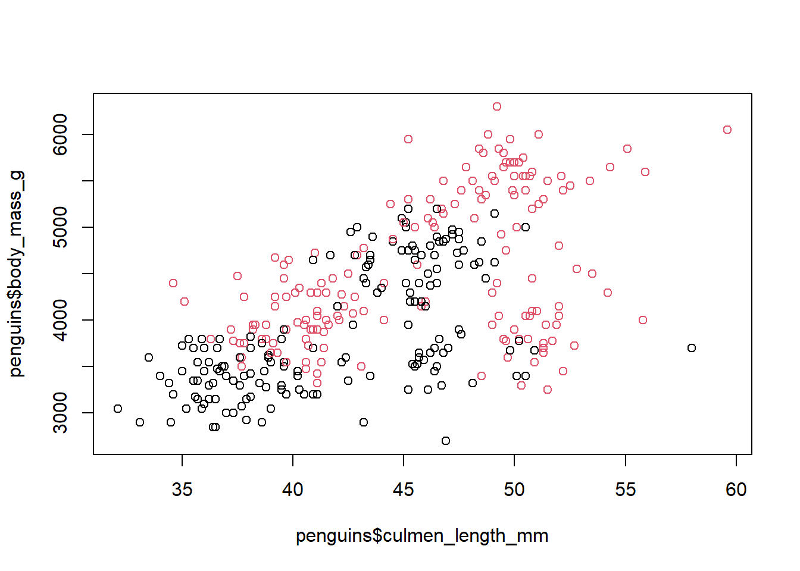
Cambiar el tamaño del simbolo o forma del simbolo:
plot(x = penguins$culmen_length_mm,
y = penguins$body_mass_g,
col = penguins$sex,
pch = 16,
cex = 2)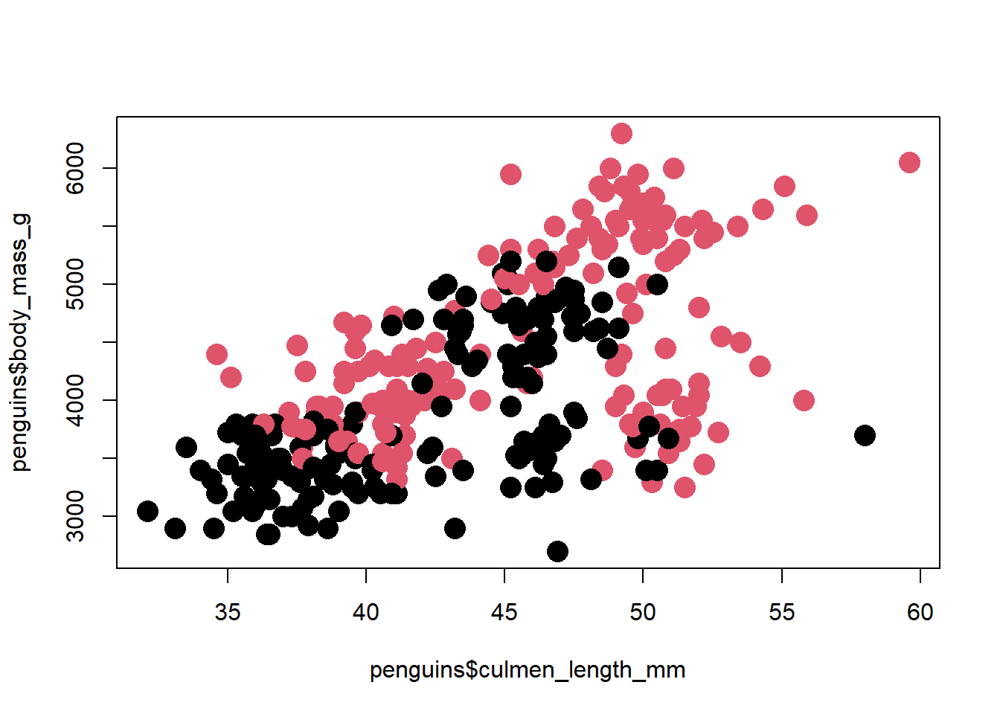
En donde pch() indica el simbolo, mientras que cex()el tamaño.
Aqui encontraras una lista con los valores de cada simbolo: 
Para los simbolos de 21 a 25, es necesario especificar el color del borde (col=) asi como del relleno (bg=)
CUando usamos plot() es posible unir dos series diferentes. Para esto, primero se gráfica la primera serie, que en este caso es “value” y posteriormente se añada la segunda serie usando la funciones lines(). Por ejemplo, generamos un segundo vector con 31 datos:
value2 <- rnorm(31)Ahora podemos unir ambos vectores en la misma gráfica de la siguiente forma:
plot(year, value, type = "l", col ="tomato", lwd=2, ylim = c(-5,5))
lines(year, value2, col = "lightblue", lwd = 2, lty= "dashed")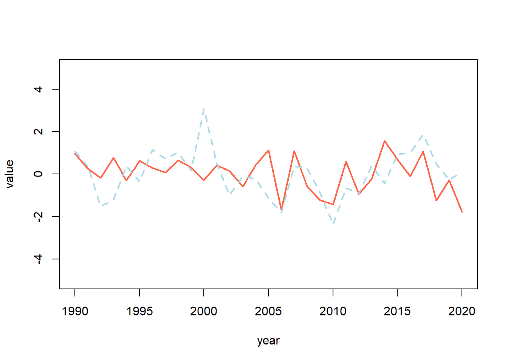
Entre los parametros que se pueden modificar tenemos:
lwd= grosor de la linealty= tipo de linea (“dashed”, “solid”, “dotted” y “longdash”)ylim= limites del eje Y. Este es en forma de vector numerico
Para añadir una leyenda, se usa la función legend() despues del gráfico.
plot(year, value, type = "l", col ="tomato", lwd=2, ylim = c(-5,5))
lines(year, value2, col = "lightblue", lwd = 2, lty= "dashed")
legend("topleft", legend = c("value1", "value2"),
col=c("tomato", "lightblue"),
lty = c("solid", "dashed"))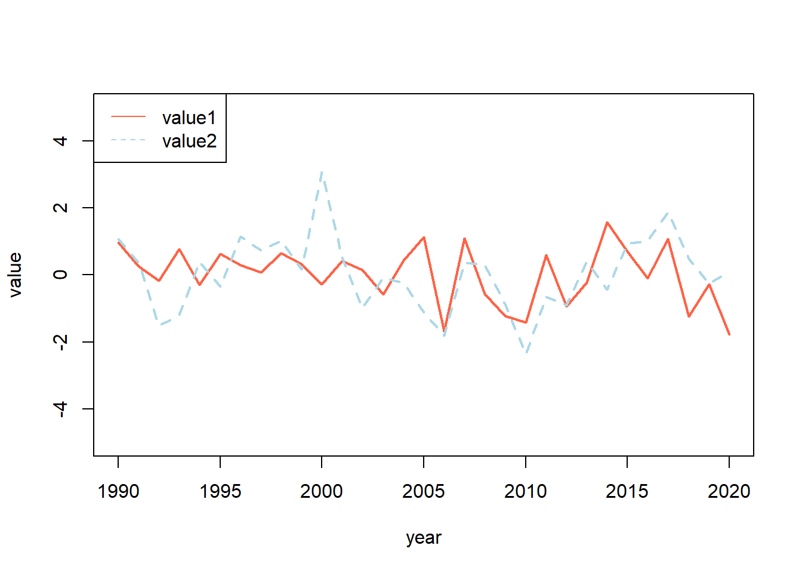
Para unir dos o mas gráficos es posible ajustar el área de gráfico con la funcion par()
par(mfrow=c(1,2)) #numero de filas, numero de columnas
plot(year, value, type = "l", col ="tomato", lwd=2, ylim = c(-5,5))
plot(year, value2, type = "l", col ="lightblue", lwd=2, ylim = c(-5,5))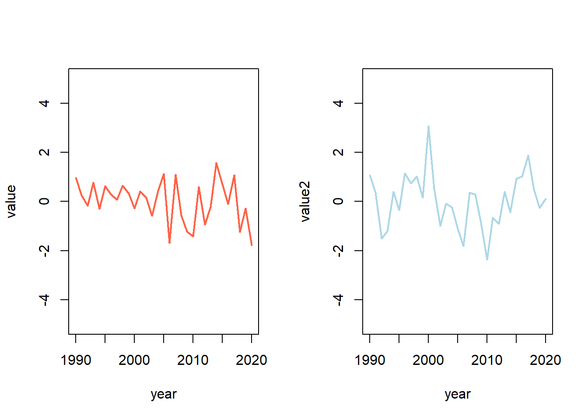
dev.off() #limpia el area de gráficonull device
1 par(mfrow=c(2,1)) #numero de filas, numero de columnas
plot(year, value, type = "l", col ="tomato", lwd=2, ylim = c(-5,5))
plot(year, value2, type = "l", col ="lightblue", lwd=2, ylim = c(-5,5))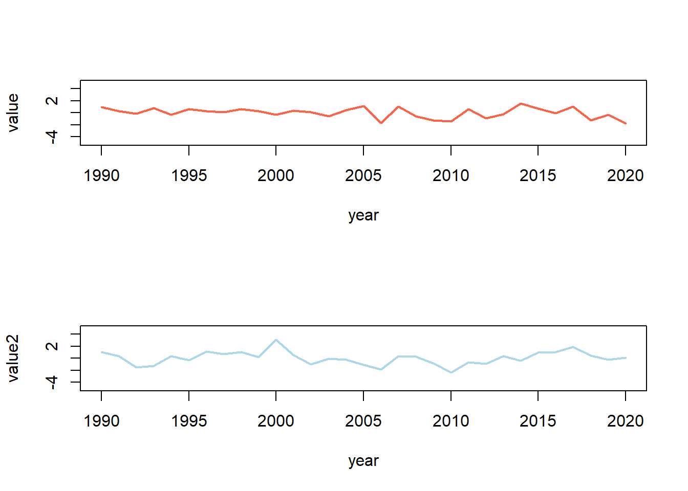
dev.off()null device
1 Finalmente, es posible usar la función mtext() para agregar titulo a una serie de gráficas.
par(mfrow=c(1,3), oma = c(0, 0, 2, 0)) #numero de filas, numero de columnas
# Grafico de dispersión
plot(x = penguins$culmen_length_mm,
y = penguins$body_mass_g,
col = penguins$sex,
type = "p",
main = "Relacion entre longitud del culmen y masa corporal",
pch = 15,
ylab = "Masa corporal (g)",
xlab = "Longitud del culmen (mm)")
# Boxplot
boxplot(culmen_length_mm ~ island, data = penguins, main = "Longitud del culmen por sitio")
# Histograma
hist(penguins$culmen_length_mm, main="Histograma Logitud del culmen (mm)")
mtext("Datos de longitud del culmen", outer = TRUE)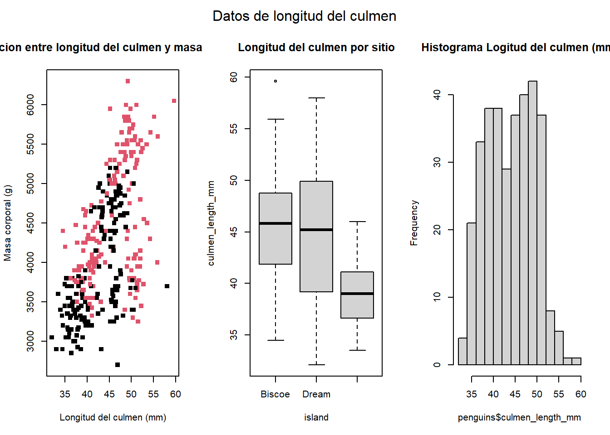
dev.off() #limpia el area de gráficonull device
1 Observa que para que se despliegue el texto en la parte superior, es necesario ajustar el espacio del gráfico, es decir, incrementar el margen
Los margenes de una figura se ajustan con los parametros mar(), para los margenes internos, y omar()para los margenes externos, tal como se muestra en la siguiente figura:

Para ambos parametros, se asignan cuatro valores para indicar el espacio abajo, izquierda, arriba, derecha.
Ejercicio:
Ejercicio: Usando todos tus conocimientos adquiridos hasta este punto, recrea esta gráfica:
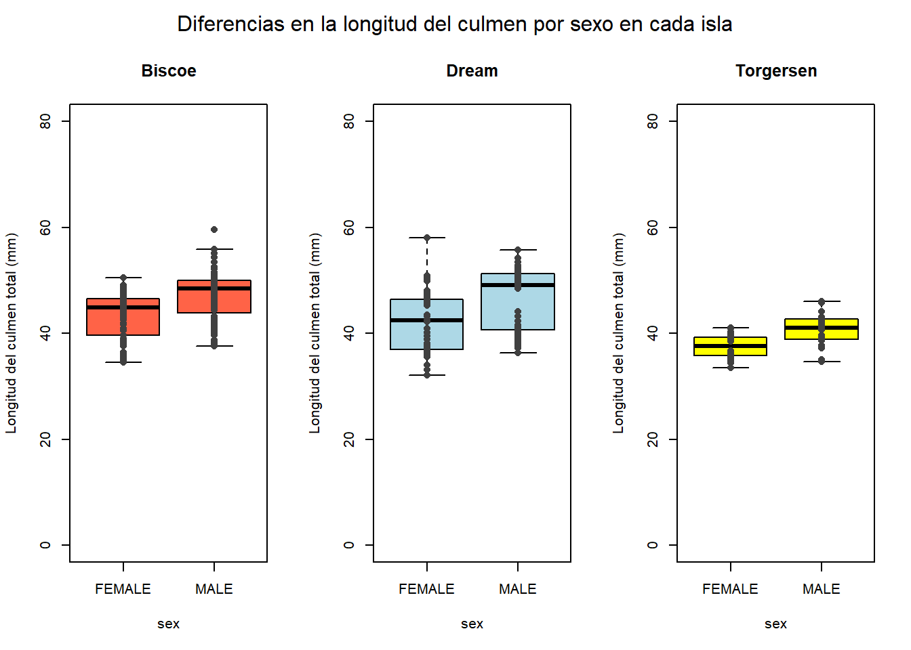
null device
1
sessionInfo()R version 4.0.5 (2021-03-31)
Platform: x86_64-w64-mingw32/x64 (64-bit)
Running under: Windows 10 x64 (build 19041)
Matrix products: default
locale:
[1] LC_COLLATE=English_United States.1252
[2] LC_CTYPE=English_United States.1252
[3] LC_MONETARY=English_United States.1252
[4] LC_NUMERIC=C
[5] LC_TIME=English_United States.1252
attached base packages:
[1] stats graphics grDevices utils datasets methods base
other attached packages:
[1] workflowr_1.6.2
loaded via a namespace (and not attached):
[1] Rcpp_1.0.5 whisker_0.4 knitr_1.30 magrittr_2.0.1
[5] R6_2.5.0 rlang_0.4.11 fansi_0.4.2 highr_0.8
[9] stringr_1.4.0 tools_4.0.5 xfun_0.20 utf8_1.2.1
[13] git2r_0.27.1 htmltools_0.5.1.1 ellipsis_0.3.1 rprojroot_2.0.2
[17] yaml_2.2.1 digest_0.6.27 tibble_3.0.4 lifecycle_1.0.0
[21] crayon_1.4.1 later_1.1.0.1 vctrs_0.3.8 promises_1.1.1
[25] fs_1.5.0 glue_1.4.2 evaluate_0.14 rmarkdown_2.6
[29] stringi_1.5.3 compiler_4.0.5 pillar_1.6.0 httpuv_1.5.4
[33] pkgconfig_2.0.3